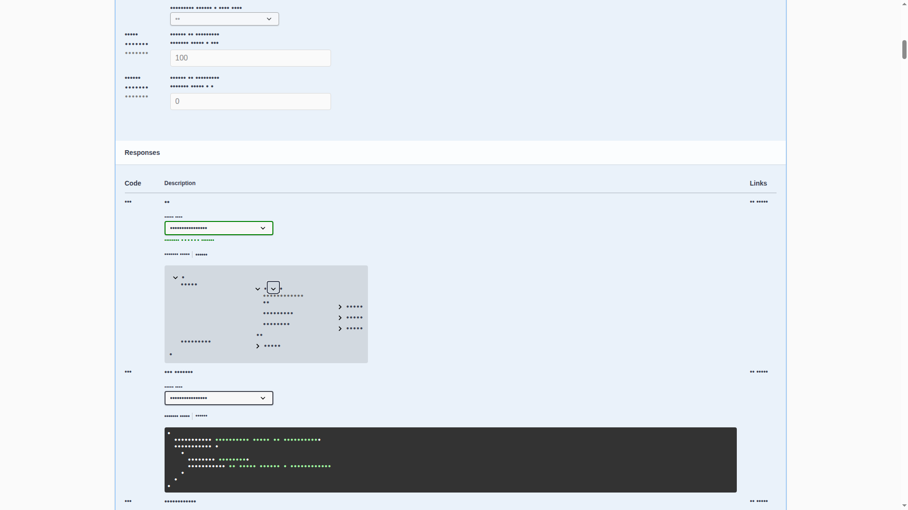

Consultar o saldo das contas financeiras pela API
Pela API pública v3 do ERP da Olist, você lista as contas financeiras e pode filtrar a consulta por descrição, situação, ordenação e paginação.
A resposta não inclui saldo atual nem saldo conciliado.
Instruções
-
Acesse Configurações > Configurações ERP.

-
Na seção Outras configurações, clique em Token API.
-
Se o campo Token estiver vazio, clique em Gerar Token API.
-
Autentique a chamada com bearerAuth (HTTP Bearer), usando o valor do campo Token. O token é o identificador único da sua conta no ERP e permite operações nesta conta pelas APIs.

-
Envie GET /contas-financeiras. A resposta 200 devolve cada conta somente com id, descricao e situacao, sem saldo atual nem saldo conciliado. Para filtrar a lista, informe os parâmetros opcionais:
- descricao: pesquisa pela descrição da conta financeira
- situacao: informe A (Ativa) ou I (Inativa)
- orderBy: informe asc (Crescente) ou desc (Decrescente)
- limit e offset: paginam o resultado
